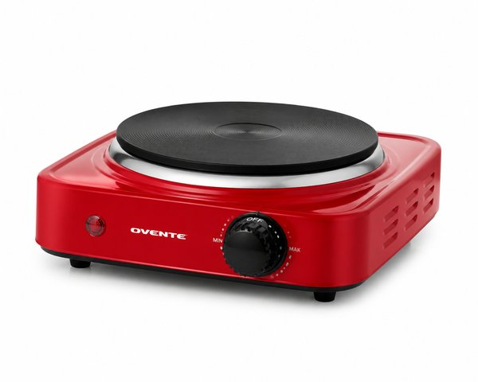
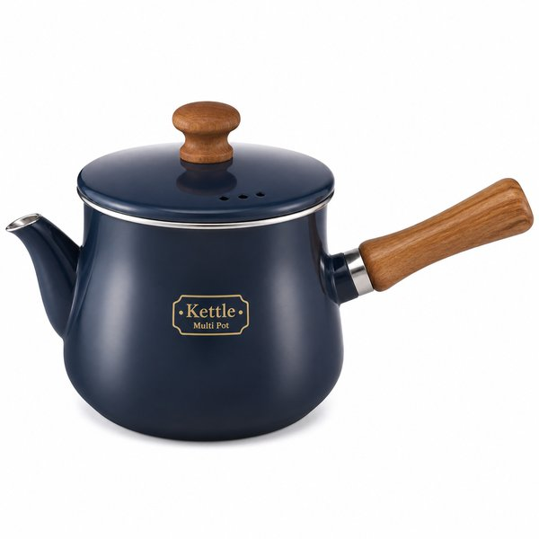
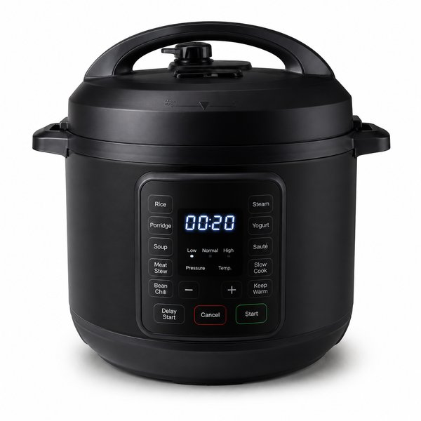
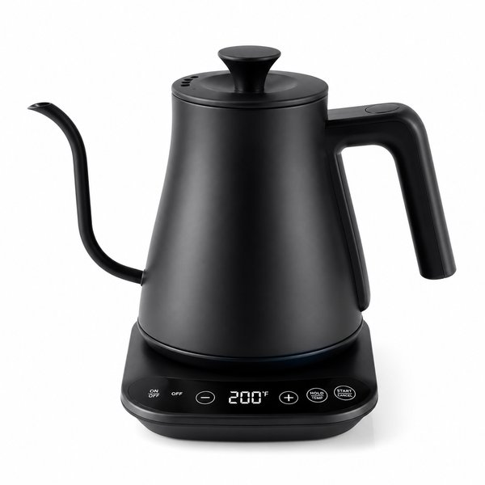
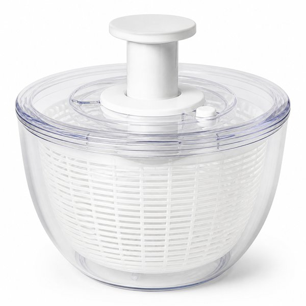
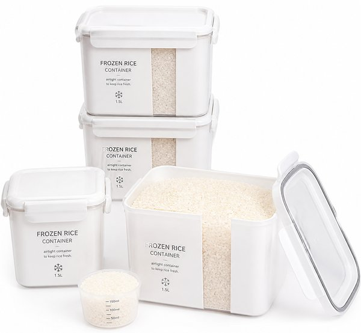
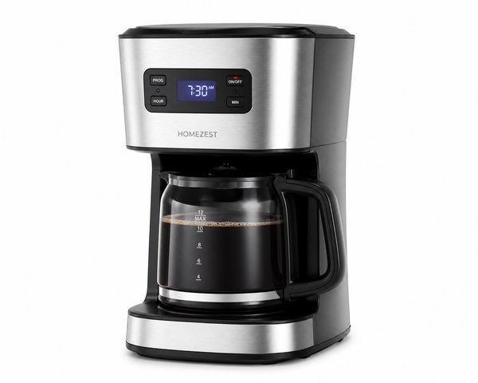
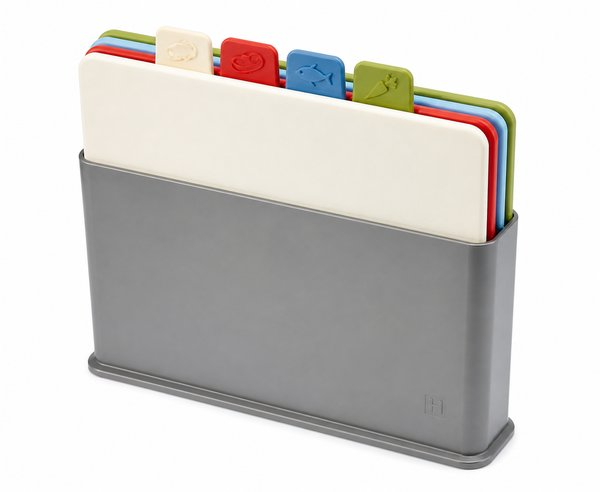
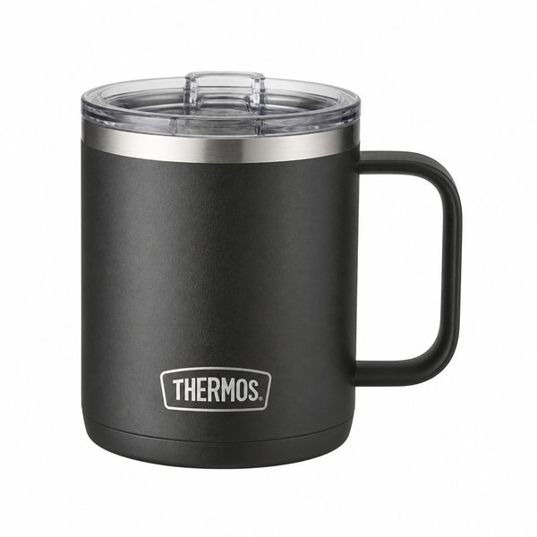

【2026年最新】自炊が劇的にラクになる！時短キッチングッズ・便利家電おすすめ10選
仕事終わりや忙しい休日に、毎日イチから料理や後片付けをするのは本当に大変ですよね。
「少しでも自炊の手間を減らして美味しいご飯が食べたい」「キッチンの洗い物やコンロ掃除をラクにしたい」と考えている方にこそ、道具への投資が圧倒的なリターンをもたらします。
本記事では、共働き夫婦の編集部が実際に使って「手放せなくなった！」と太鼓判を押す、料理と後片付けの時間を劇的に削る神キッチングッズ＆便利家電10選をご紹介します。
- 一目でわかる！おすすめ10選の比較表
- BEST 1：バルミューダ ザ・トースター スチーム
- BEST 2：コンパクトホットプレート 平面＋たこ焼きプレート
- BEST 3：ToMay (トゥーメイ) マルチポット Mサイズ
- BEST 4：電気圧力鍋 2.2L 液晶ディスプレイ 65種類自動メニュー
- BEST 5：アプレシア コントロール 0.8L 温度調節電気ケトル
- BEST 6：クリア サラダスピナー 野菜水切り器
- BEST 7：極 冷凍ごはん容器 2個入り すのこ付き
- BEST 8：全自動コーヒーメーカー カフェばこ SC-A351
- BEST 9：ネストボード まな板セット 3枚スタンド付き
- BEST 10：真空断熱マグカップ 350ml フタ付き 保温保冷
- まとめ：生活をラクにする最初の一歩
| 順位 | 商品名 | ブランド | 最大の特徴・おすすめ理由 | 総合評価 |
|---|---|---|---|---|
| 01 | バルミューダ ザ・トースター スチーム | BALMUDA（バルミューダ） | 独自のスチームテクノロジーでどんなパンも劇的においしく復活 | ★★★★★ 4.9 |
| 02 | コンパクトホットプレート 平面＋たこ焼きプレート | BRUNO（ブルーノ） | 食卓がそのまま調理場になり、コンロの前に立ち続ける必要がない | ★★★★★ 4.8 |
| 03 | ToMay (トゥーメイ) マルチポット Mサイズ | 和平フレイズ（Wahei Freiz） | 深型形状で油や汁の飛び散りが激減しコンロが汚れない | ★★★★★ 4.9 |
| 04 | 電気圧力鍋 2.2L 液晶ディスプレイ 65種類自動メニュー | アイリスオーヤマ | 火加減の心配や吹きこぼれゼロで完全ほったらかし調理 | ★★★★☆ 4.8 |
| 05 | アプレシア コントロール 0.8L 温度調節電気ケトル | ティファール（T-fal） | お湯が沸くスピードが非常に速く朝の時短に最適 | ★★★★☆ 4.8 |
| 06 | クリア サラダスピナー 野菜水切り器 | OXO（オクソー） | 片手プッシュ＆特許ブレーキボタンで誰でも簡単に水切り可能 | ★★★★★ 4.9 |
| 07 | 極 冷凍ごはん容器 2個入り すのこ付き | マーナ（MARNA） | ラップで包む手間とゴミが完全になくなる | ★★★★★ 4.9 |
| 08 | 全自動コーヒーメーカー カフェばこ SC-A351 | siroca（シロカ） | 豆でも粉でも淹れられて朝のコーヒー代を劇的に節約 | ★★★★☆ 4.7 |
| 09 | ネストボード まな板セット 3枚スタンド付き | Joseph Joseph（ジョセフジョセフ） | 用途別に色分けされているため食中毒予防や匂い移りを防止 | ★★★★☆ 4.7 |
| 10 | 真空断熱マグカップ 350ml フタ付き 保温保冷 | THERMOS（サーモス） | 最後の一口まで淹れたての温度が持続する圧倒的保温力 | ★★★★★ 4.8 |

バルミューダ ザ・トースター スチーム
給水口に5ccの水を入れて焼くだけで、外はサクッ、中はもっちりとした極上のトーストが焼き上がる奇跡のトースターです。冷凍したパンや総菜パンの温め直しも焼き立てベーカリーの味が蘇ります。
- 独自のスチームテクノロジーでどんなパンも劇的においしく復活
- キッチンに置くだけで映える美しいミニマルデザイン
- クロワッサンやフランスパン専用のリベイクモード搭載
- 一般的なトースターに比べて価格がやや高め

コンパクトホットプレート 平面＋たこ焼きプレート
食卓に置いたまま焼肉、パエリア、たこ焼き、餃子など多彩な料理が楽しめる大人気ホットプレート。2〜3人にちょうどいいA4スペースサイズで、フッ素樹脂加工プレートはお手入れも簡単です。
- 食卓がそのまま調理場になり、コンロの前に立ち続ける必要がない
- ホーロー鍋風のおしゃれなデザインでホームパーティーにも最適
- 最大250℃の本格火力で焼きムラが少ない
- 本体の縁部分に具材が落ちると掃除に少し手間がかかる

ToMay (トゥーメイ) マルチポット Mサイズ
「茹でる・沸かす・炒める・煮る・揚げる・炊く・和える」の7役を1台でこなす万能深型ポット。コロンとした形状で場所を取らず、注ぎ口が付いているためスープやケトル代わりにも重宝します。
- 深型形状で油や汁の飛び散りが激減しコンロが汚れない
- 内面ふっ素樹脂加工で焦げ付きにくく洗い物が一瞬
- 取っ手が下向きで狭いキッチンや冷蔵庫内でも省スペース
- 食洗機には非対応のため手洗いが必要

電気圧力鍋 2.2L 液晶ディスプレイ 65種類自動メニュー
材料を入れてボタンを押すだけで、火を使わずに絶品角煮やカレー、無水調理が完成する電気圧力鍋。予約調理にも対応しており、仕事から帰宅した瞬間においしい料理が待っています。
- 火加減の心配や吹きこぼれゼロで完全ほったらかし調理
- 65種類の豊富な自動メニュー搭載で献立に悩まない
- グリル鍋としても使えてそのまま食卓に置ける
- 減圧・排気に一定の時間がかかるため短時間の炒め物には不向き

アプレシア コントロール 0.8L 温度調節電気ケトル
白湯・日本茶・コーヒー・紅茶など飲み物に合わせて7段階（60〜100℃）の温度設定ができる電気ケトル。60分間の保温機能付きで、忙しい朝も沸かし直しの手間が省けます。
- お湯が沸くスピードが非常に速く朝の時短に最適
- 好みの温度で淹れられるためコーヒーやお茶の味が格段にアップ
- タッチパネル式で操作もお手入れも直感的
- 注ぎ口が広めのため本格ドリップには慣れが必要

クリア サラダスピナー 野菜水切り器
片手でノブを押すだけで超高速回転し、野菜の水気を一瞬で飛ばすロングセラースピナー。水っぽさが消えるだけでいつものサラダがレストラン級のシャキシャキ食感に激変します。
- 片手プッシュ＆特許ブレーキボタンで誰でも簡単に水切り可能
- しっかり水が切れるためドレッシングが薄まらず少量で済む
- ノブを下げてフラットに収納でき冷蔵庫にもそのまま入る
- ボウル自体がやや大きいため収納場所の確認が必要

極 冷凍ごはん容器 2個入り すのこ付き
お米のプロと共同開発された、炊きたての味をそのまま閉じ込める冷凍ごはん専用容器。底のすのこパーツが余分な水分を落とし、レンジ加熱後もベチャつかずふっくら炊き立てが楽しめます。
- ラップで包む手間とゴミが完全になくなる
- すのこ構造でムラなく温まり冷凍とは思えない美味しさ
- 角が丸く洗いやすい構造で食洗機にも対応
- 家族分を揃えると初期費用が少しかかる

全自動コーヒーメーカー カフェばこ SC-A351
豆挽きから抽出までボタンひとつで全自動で行えるミル内蔵コーヒーメーカー。A4サイズ以下の極小スペースに収まり、挽きたて淹れたての極上アロマで最高の朝をスタートできます。
- 豆でも粉でも淹れられて朝のコーヒー代を劇的に節約
- ステンレスメッシュフィルターで豆の油分まで抽出して深いコク
- ミル付きバスケットが丸ごと外せて水洗いも簡単
- ミル作動時に約15秒ほど挽き音がする

ネストボード まな板セット 3枚スタンド付き
肉・魚・野菜と食材ごとに使い分けができる色違いまな板3枚セット。スタイリッシュなスタンドは風通しがよく設計されており、濡れたまま立てても乾きやすく衛生的です。
- 用途別に色分けされているため食中毒予防や匂い移りを防止
- スリムなスタンド付きで作業台のスペースを圧迫しない
- 両面に滑り止めグリップ付きで安定感抜群
- 傷がつきにくい素材だが長期使用で包丁跡は残る

真空断熱マグカップ 350ml フタ付き 保温保冷
ステンレス製魔法びん構造で温かい飲み物も冷たい飲み物も数時間温度をキープする定番マグ。氷を入れても結露せず、熱々のスープを入れても外側が熱くなりません。
- 最後の一口まで淹れたての温度が持続する圧倒的保温力
- デスクワーク時も結露で机や書類を濡らさない
- 埃を防ぐスライド式フタ付きで作業に没頭できる
- 電子レンジでの加熱には非対応
💡 まとめ：生活をラクにする最初の一歩
料理は毎日のことだからこそ、優秀な便利グッズを取り入れるだけで平日のストレスが劇的に軽減されます。まずは洗い物が激減する「マルチポット」や、ボタンひとつで本格煮込みができる「電気圧力鍋」から試してみてはいかがでしょうか。
楽天市場では「5と0のつく日」や「お買い物マラソン」などのキャンペーンに合わせて購入すると、ポイント還元が最大化してお得に手に入ります。ぜひチェックしてみてくださいね。